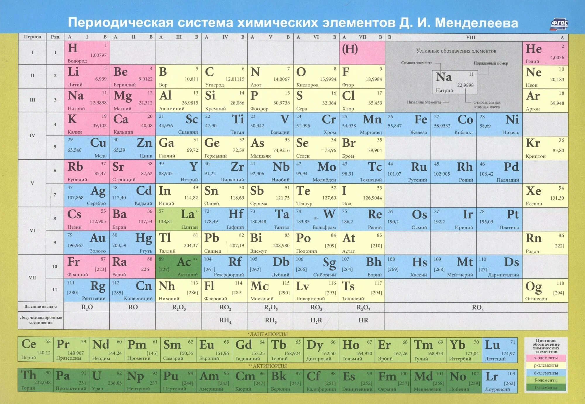
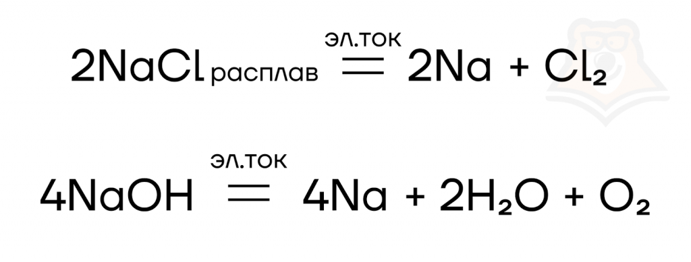
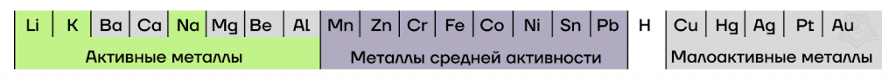
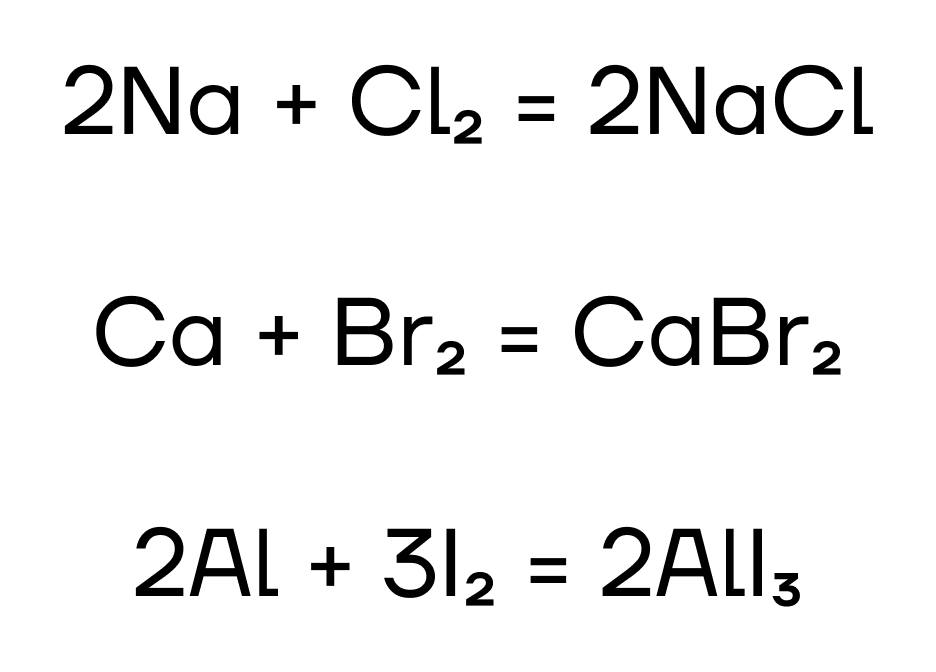
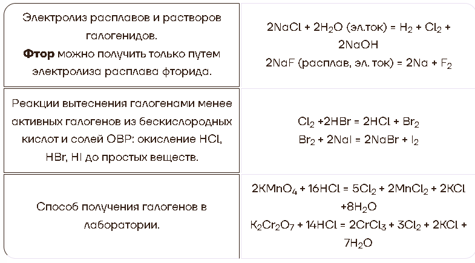

Химический элемент — совокупность (группа, сорт, вид) атомов, обладающих одинаковыми свойствами, с одним и тем же количеством протонов и нейтронов в ядре, электронов в электронной оболочке.
Периоды — это горизонтальные ряды таблицы. Их всего семь. В каждом из них расположены элементы, атомные номера которых увеличиваются слева направо. Например, первый период включает водород (H) и гелий (He), а во втором уже восемь элементов — от лития (Li) до неона (Ne).
Группы — это вертикальные столбцы. Их всего 18. Элементы одной группы имеют похожие химические свойства, потому что их внешние электронные оболочки устроены одинаково. Например, все представители первой группы схожи между собой: так, натрий (Na) и калий (K), — очень бурно реагируют с водой.
В некоторых группах элементы делятся на главную подгруппу (обозначается буквой А) и побочную (обозначается буквой B). Например, в главной подгруппе первой группы находятся щелочные металлы, а в побочной — переходные металлы, такие как медь (Cu) или серебро (Ag).
ОбЪединения элементов в блоки по типу их электронных орбиталей:
s-элементы самые простые, у которых заполняется только одна орбиталь, например, литий (Li) и бериллий (Be).
p-элементы, к которым относятся многие неметаллы, такие как азот (N) и кислород (O).
d-элементы — металлы, включая железо (Fe) и золото (Au).
f-элементы — лантаноиды и актиноиды, которые находятся в отдельной части таблицы.
Изменение химических свойств по периодам. В каждом периоде слева направо металлические свойства ослабевают, а неметаллические — усиливаются.
Повторение свойств по группам. Элементы, расположенные в одной группе, имеют схожие химические свойства.
Изменение атомного радиуса. По периоду атомный радиус уменьшается, так как с увеличением атомного номера количество протонов в ядре растет, а электроны притягиваются к центру сильнее, сжимая атом. По группе атомный радиус увеличивается, так как новые энергетические уровни добавляются, и расстояние от ядра до внешних электронов увеличивается.
Изменение электроотрицательности. Электроотрицательность — способность атома привлекать электроны в химической связи. По периодам электроотрицательность увеличивается слева направо, так как с ростом атомного номера ядро сильнее притягивает электроны. По группам она уменьшается, так как новые уровни уменьшают силу притяжения ядра.
Энергия ионизации — это энергия, необходимая для того, чтобы удалить электрон из атома. По периодам она увеличивается слева направо, так как электроны находятся ближе к ядру и сильнее удерживаются. По группам энергия ионизации уменьшается вниз, так как электроны находятся дальше от ядра и легче удаляются.

По положению элемента в периоде можно определить его принадлежность к металлам или неметаллам. Металлы расположены в левом нижнем углу таблицы, неметаллы — в правом верхнем углу. Между ними находятся полуметаллы. Все периоды, кроме первого, начинаются щелочным металлом. Каждый период заканчивается инертным газом.
Первая группа главная подгруппа элементов (IA) — щелочные металлы. Это серебристые вещества (кроме цезия, он золотистый), настолько мягкие, что их можно резать ножом. Поскольку на их внешнем электронном слое находится только один электрон, они очень легко вступают в реакции. Плотность щелочных металлов меньше плотности воды, поэтому они в ней не тонут, а бурно реагируют с образованием щёлочи и водорода. Реакция идёт настолько энергично, что водород может даже загореться или взорваться. Эти металлы настолько активно реагируют с кислородом в воздухе, что их приходится хранить под слоем керосина (а литий — под слоем вазелина).
Вторая группа главная подгруппа (IIА) представлена щелочноземельными металлами с двумя электронами на внешнем энергетическом уровне атома. Бериллий и магний часто не относят к щелочноземельным металлам. Они тоже имеют серебристый оттенок и легко взаимодействуют с другими элементами, хотя и не так охотно, как металлы из первой группы главной подгруппы. Температура плавления щелочноземельных металлов выше, чем у щелочных. Ионы магния и кальция обусловливают жёсткость воды.
Правый верхний угол таблицы до инертных газов занимают неметаллы. Неметаллы плохо проводят тепло и электричество и могут существовать в трёх агрегатных состояниях: твёрдом (как углерод или кремний), жидком (как бром) и газообразном (как кислород и азот). Водород может проявлять как металлические, так и неметаллические свойства, поэтому его относят как к первой, так и к седьмой группе Периодической системы.
Седьмая группа главная подгруппа (VIIA) представлена галогенами — неметаллами с семью электронами на внешнем электронном слое атома. Это сильнейшие окислители, легко вступающие в реакции. Галогены («рождающие соли») назвали так потому, что они реагируют со многими металлами с образованием солей. Например, хлор входит в состав обычной поваренной соли.
Самый активный из галогенов — фтор. Он способен разрушать даже молекулы воды, за что и получил своё грозное имя (слово «фтор» переводится на русский язык как «разрушительный»). А его «близкий родственник» — иод — используется в медицине в виде спиртового раствора для обработки ран.
Металлы IA группы — щелочные металлы: литий Li, натрий Na, калий K, рубидий Rb, цезий Cs и франций Fr.
Щелочные металлы — химически активные серебристо-белые металлы (за исключением цезия, имеющего серебристо-желтую окраску). Щелочные металлы обладают относительно невысокой плотностью, литий, натрий и калий легче воды, кроме того эти металлы очень мягкие, их можно нарезать ножом или раскатать в блин с помощью скалки.
Атомы щелочных металлов содержат один электрон на внешнем энергетическом уровне, электронную конфигурацию внешнего энергетического уровня можно отразить как ns1 (на картинке представлена электронно-графическая схема лития, для остальных щелочных металлов она аналогична).
Единственный электрон на внешнем энергетическом уровне атомов щелочных металлов может быть легко оторван, в таком состоянии электронная оболочка атома щелочного металла станет такой же, как у благородного газа, предшествующего ему в периодической системе.
Щелочные металлы в соединениях проявляют постоянную валентность и степень окисления I и +1 соответственно.
Из-за высокой химической активности щелочные металлы на встречаются в свободном виде, в природе они распространены преимущественно в виде солей. Таким образом, для получения щелочного металла нужно восстановить его из соли, однако поскольку щелочные металлы — очень активные металлы, восстановить их из солей чисто химическим путем задача крайне сложная, поэтому для получения щелочных металлов используют электролиз расплавов их солей или гидроксидов:
Как типичные восстановители, щелочные металлы могут взаимодействовать со своими противоположностями — неметаллами.
Продукты взаимодействия щелочных металлов с водородом — гидриды металлов, являются представителями редкой группы веществ, в которых водород находится в степени окисления -1, легко подвергаются гидролизу, образуя щелочь и водород, а в присутствии кислот — соль и водород.
NaH + H2O = NaOH + H2
NaH + HCl = NaCl + H2
Несмотря на то, что при повышенной температуре с азотом способны взаимодействовать все щелочные металлы, легко эта реакция протекает лишь с литием (даже при комнатной температуре):
6Li + N2 = 2Li3N
Кроме того, щелочные металлы ведут себя «необычно» при взаимодействии с кислородом — в зависимости от того, какой именно из металлов вступает в реакции, образуются различные продукты.
Щелочные металлы относятся к активным металлам и взаимодействуют с водой, вытесняя из нее водород.
Реакция щелочных металлов с водой протекает очень бурно и может сопровождаться взрывом.
2Na + 2H2O = 2NaOH + H2
Кроме того, что щелочные металлы способны к взаимодействию с водой, они могут вступать в реакции и с аммиаком, в состав которого, как и в состав воды, входят атомы водорода в степени окисления +1. При взаимодействии щелочных металлов с аммиаком образуются соответствующие амиды и водород.
2Na + 2NH3 = 2NaNH2 + H2
Образующиеся в ходе реакции амиды подвержены гидролизу:
NaNH2 + H2O = NaOH + NH3
NaNH2 + 2HCl = NaCl + NH4Cl
Щелочные металлы способны восстанавливать менее активные металлы из их оксидов и галогенидов при нагревании.
2Na + CuO = Cu + Na2O
3K + AlCl3 = Al + 3KCl
Во IIA подгруппе расположены элементы: бериллий Be, магний Mg, кальций Ca, стронций Sr, барий Ba и радий Ra. Согласно рекомендациям ИЮПАК все металлы IIA группы относят к щелочноземельным металлам
На внешнем энергетическом уровне атомы щелочноземельных металлов содержат два электрона, и в основном состоянии конфигурация их внешнего электронного слоя ns2.
Но так как для образования связей с другими элементами необходимо наличие валентных электронов, то металлам IIA группы необходимо распарить электроны. Таким образом, они помещают каждый из них в свою отдельную «комнату» — в квантовую ячейку.
В результате, появляются два неспаренных электрона, поэтому у металлов IIA группы постоянная валентность II и постоянная степень окисления +2.
Как и при получении щелочных металлов, основным способом получения щелочноземельных металлов является электролиз расплавов солей и гидроксидов:
MgCl2 (t) = Mg + Cl2
Щелочноземельные металлы, являясь достаточно активными металлами, легко взаимодействуют с типичными неметаллами, проявляя свои восстановительные свойства и образуя бинарные соединения.
Щелочноземельные металлы начиная с магния при взаимодействии с углеродом образуют карбиды состава MeC2. Эти соединения являются ацетиленидами, т.е. солями ацетилена, который выделяется при гидролизе этих соединений:
CaC2 + 2H2O = Ca(OH)2 + C2H2
Щелочноземельные металлы, начиная с кальция, легко реагируют с водой при комнатной температуре. В ходе таких реакций, как и в случае с щелочными металлами, образуются соответствующий гидроксид и водород:
Ba + 2H2O = Ba(OH)2 + H2↑
Металлы IIA группы реагируют с растворами кислот, при этом образуя соответствующие соли:
Ca + 2HCl = CaCl2 + H2↑
При взаимодействии с кислотами-окислителями бериллий ведет себя как металл средней активности, остальные же — как активные.
4Ca + 5H2SO4(конц.) = 4CaSO4 + H2S + 4H2O
Be + 2H2SO4(конц.) = BeSO4 + SO2 + 2H2O
4Сa + 10HNO3(оч. разб.) = 4Ca(NO3)2 + NH4NO3 + 3H2O
Be + 4HNO3(конц.) = Be(NO3)2 + 2NO2 + 2H2O
Металлы IIA группы, начиная с кальция, не используют для вытеснения других металлов из растворов их солей, поскольку они реагируют с водой.
Бериллий и магний при обычных условиях с водой не реагируют и могут быть использованы в реакциях замещения:
Mg + CuSO4 = MgSO4 + Cu
Галогены — это элементы VIIA-группы таблицы Менделеева
Галогены образуют простые вещества в виде двухатомных молекул: F2, Cl2, Br2, I2. Выделяется в этом ряду астат — это радиоактивный элемент, который может быть получен только искусственным путем. Интересно, что астат — это наиболее редкий элемент среди всех, встречающихся на планете. Его суммарное содержание в земной коре в любой момент времени не может превышать одного грамма.
У всех галогенов достаточно высокие значения электроотрицательности (ЭО) на фоне других элементов. К чему это ведет? К тому, что все галогены являются крайне активными веществами, при этом их активность растет к фтору
В реакциях из-за высоких ЭО они обычно играют роль окислителей («воров электронов»). Фтор при этом является самым сильным окислителем из них, а иод — самым слабым.
Галогены — неметаллы, поэтому по «закону противоположностей» они будут взаимодействовать с металлами, причем из-за своей активности практически со всеми. Название «галогены» можно перевести как «рождающие соли». Это объясняется тем, что в реакциях с металлами галогены образуют соли.
Фтор реагирует практически со всеми неметаллами, в том числе с другими галогенами, тоже имеющими очень высокую химическую активность.
Иод из-за своей меньшей, по сравнению с другими галогенами, активности не взаимодействует с кремнием и серой.
Все галогены (кроме фтора) не взаимодействуют напрямую с кислородом и азотом ввиду близких значений электроотрицательности (то есть «не могут решить», кто в реакции будет окислителем, а кто — восстановителем). По этой же причине они не реагируют с углеродом.
В воде диспропорционируют: так как вода не обладает выраженными окислительными или восстановительными свойствами, роли и окислителя, и восстановителя приходится брать на себя хлору и брому, поэтому они и повышают, и понижают степень окисления самостоятельно
В реакции с фтором воде приходится быть восстановителем
Образом, аналогичным реакциям с водой, галогены взаимодействуют и со щелочами, но еще более интересно. При разной температуре раствора реакция протекает по-разному, в холодном растворе щелочи образуется гипохлорит, а в горячем — хлорат:
Существует несколько распространенных способов получения галогенов. В промышленности в основном используют электролиз расплавов и растворов солей. А вот в лаборатории их можно получить реакцией галогеноводородов с сильными окислителями.
Растворение — физико-химический процесс, при котором происходит диссоциация (распад) вещества и взаимодействие образовавшихся частиц с молекулами растворителя.
Электролитическая диссоциация — это процесс распада вещества на ионы, то есть заряженные частицы, в растворе или расплаве.
Реакции ионного обмена (РИО) — это реакции, которые протекают между ионами в растворе электролитов.
В молекуле хлорида натрия ионный тип химической связи, то есть атомы притягиваются друг к другу за счет разных по знаку зарядов. Атом натрия отдает свой электрон хлору, заряжаясь положительно, соответственно, атом хлора становится отрицательно заряженным. Растворяемый в воде хлорид натрия оказывается в среде полярного растворителя, иначе говоря, мы «обогащаем» жидкость заряженными частицами, а именно: катионами натрия (Na+) и анионами хлора (Cl—).
Полярный растворитель — это жидкое при нормальных условиях (н. у.) вещество, в молекуле которого присутствует атом очень электроотрицательного элемента (F, O, N, Cl, Br).
Выпадение осадка:
2KOH + CuCl2 = Cu(OH)2↓ + 2KCl
Выделение газа
Na2CO3 + 2HCl = H2O + CO2↑ + 2NaCl
Образование малодиссоциирующего вещества (воды)
NaOH + HCl = H2O + NaCl